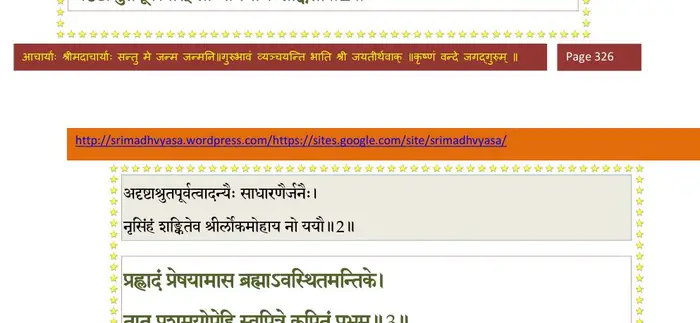
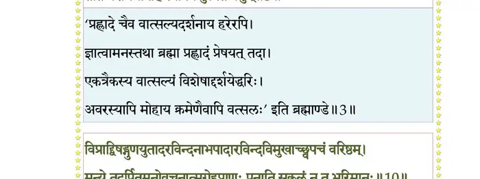
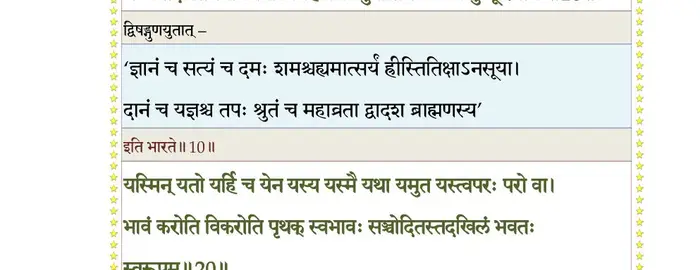
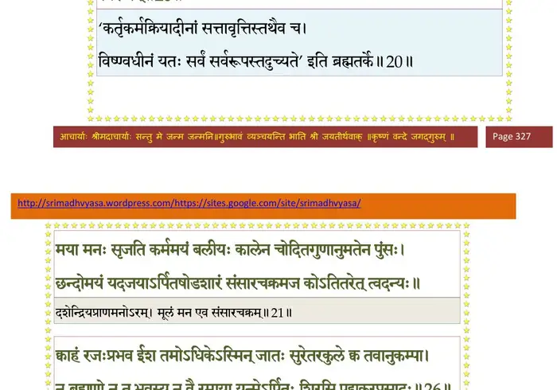
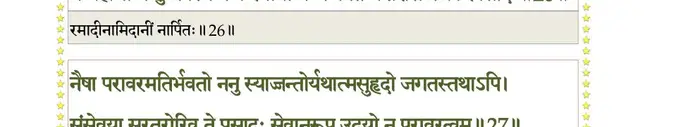
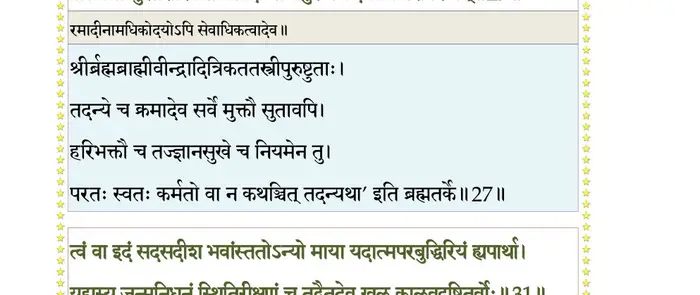
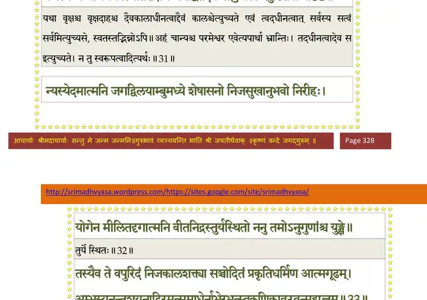
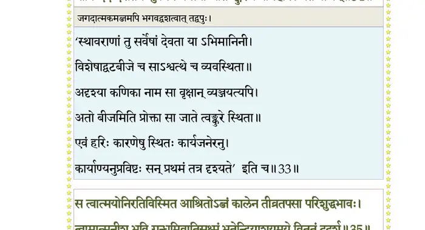
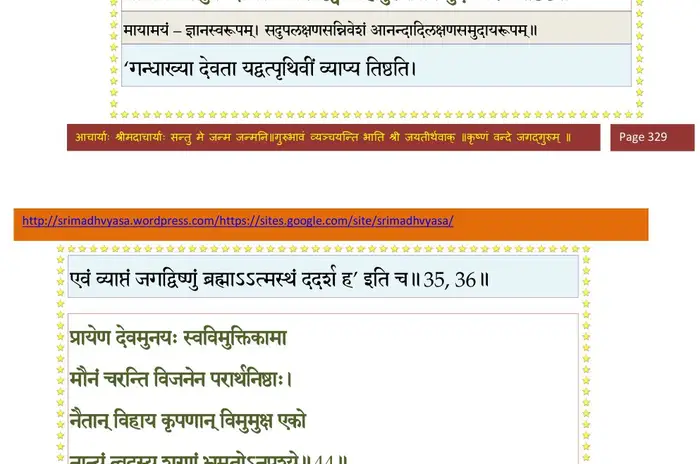
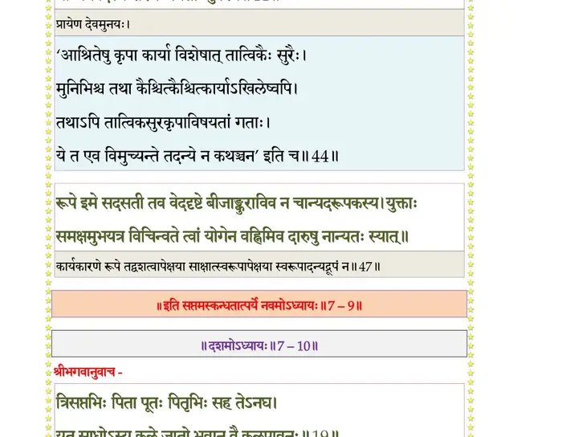

स्कन्ध 7 · अध्याय 9
श्लोक १
नारद उवाच–
एवं सुरादयः सर्वे ब्रह्मरुद्रपुरस्सराः ।
नोपेतुमशकन् मन्युसङ्ग्रहं सुदुरासदम्।। १ ।।
एवं सुरादयः सर्वे ब्रह्मरुद्रपुरस्सराः ।
नोपेतुमशकन् मन्युसङ्ग्रहं सुदुरासदम्।। १ ।।
श्लोक २
साक्षाच्छ्रीः प्रेषिता देवैर्दृष्ट्वा तन्महदद्भुतम् ।
अदृष्टाश्रुतपूर्वत्वात् सा नोपेयाय शङ्किता।। २ ।।
अदृष्टाश्रुतपूर्वत्वात् सा नोपेयाय शङ्किता।। २ ।।
भागवततात्पर्यनिर्णय

श्लोक ३
प्रह्लादं प्रेषयामास ब्रह्माऽवस्थितमन्तिके ।
तात प्रशमयोपेहि स्वपित्रे कुपितं प्रभुम्।। ३ ।।
तात प्रशमयोपेहि स्वपित्रे कुपितं प्रभुम्।। ३ ।।
भागवततात्पर्यनिर्णय

श्लोक ४
तथेति शनकै राजन् महाभागवतोऽर्भकः ।
उपेत्य भुवि कायेन ननाम विधृताञ्जलिः।। ४ ।।
उपेत्य भुवि कायेन ननाम विधृताञ्जलिः।। ४ ।।
श्लोक ५
स्वपादमूले पतितं तमर्भकं विलोक्य देवः कृपया परिप्लुतः ।
उत्थाप्य तच्छीर्ष्ण्यदधात् कराम्बुजं कालाहिनिर्दष्टधियां कृताभयम्।। ५ ।।
उत्थाप्य तच्छीर्ष्ण्यदधात् कराम्बुजं कालाहिनिर्दष्टधियां कृताभयम्।। ५ ।।
श्लोक ६
स तत्करस्पर्शधुताखिलाशुभः सपद्यभिव्यक्तपरात्मदर्शनः ।
तत्पादपद्मं हृदि निर्वृतो दधौ हृष्यत्तनुः क्लिन्नहृदश्रुलोचनः।। ६ ।।
तत्पादपद्मं हृदि निर्वृतो दधौ हृष्यत्तनुः क्लिन्नहृदश्रुलोचनः।। ६ ।।
श्लोक ७
अस्तौषीद् हरिमेकाग्रमनसा सुसमाहितः ।
प्रेमगद्गदया वाचा तन्न्यस्तहृदयेक्षणः।। ७ ।।
प्रेमगद्गदया वाचा तन्न्यस्तहृदयेक्षणः।। ७ ।।
श्लोक ८
प्रह्लाद उवाच–
ब्रह्मादयः सुरगणाः मुनयोऽथ सिद्धाः
सत्वैकतानमतयो वचसां प्रवाहैः ।
नान्तं परस्य परतोऽप्यधुनाऽपि यान्ति
किं तोष्टुमर्हति स मे हरिरुग्रजातेः।। ८ ।।
ब्रह्मादयः सुरगणाः मुनयोऽथ सिद्धाः
सत्वैकतानमतयो वचसां प्रवाहैः ।
नान्तं परस्य परतोऽप्यधुनाऽपि यान्ति
किं तोष्टुमर्हति स मे हरिरुग्रजातेः।। ८ ।।
श्लोक ९
मन्ये धनाभिजनरूपतपःश्रुतौज-
स्तेजःप्रभावबलपौरुषबुद्धियोगाः ।
नाराधनाय हि भवन्ति परस्य पुंसो
भक्त्या तुतोष भगवान् ननु यूथपाय।। ९ ।।
स्तेजःप्रभावबलपौरुषबुद्धियोगाः ।
नाराधनाय हि भवन्ति परस्य पुंसो
भक्त्या तुतोष भगवान् ननु यूथपाय।। ९ ।।
श्लोक १०
विप्राद् द्विषड्गुणयुतादरविन्दनाभ
पादारविन्दविमुखाच्छ्वपचं वरिष्ठम् ।
मन्ये तदर्पितमनोवचनात्मगेह
प्राणः पुनाति सकलं न तु भूरिमानः ।। १० ।।
पादारविन्दविमुखाच्छ्वपचं वरिष्ठम् ।
मन्ये तदर्पितमनोवचनात्मगेह
प्राणः पुनाति सकलं न तु भूरिमानः ।। १० ।।
भागवततात्पर्यनिर्णय

श्लोक ११
नैवात्मनः प्रभुरयं निजलाभपूर्णो
मानं जनादविदुषः करुणो वृणीते ।
यद् यज्जनो भगवते विदधीत मानं
तच्चात्मने प्रतिमुखस्य यथा मुखश्रीः ।। ११ ।।
मानं जनादविदुषः करुणो वृणीते ।
यद् यज्जनो भगवते विदधीत मानं
तच्चात्मने प्रतिमुखस्य यथा मुखश्रीः ।। ११ ।।
श्लोक १२
तस्मादहं विगतविक्लव ईश्वरस्य
सर्वात्मना न हि गृणामि यथामनीषम् ।
नीचोऽजया गुणविसर्गमनुप्रविष्टः
पूयेत येन हि पुमाननुवर्णितेन ।। १२ ।।
सर्वात्मना न हि गृणामि यथामनीषम् ।
नीचोऽजया गुणविसर्गमनुप्रविष्टः
पूयेत येन हि पुमाननुवर्णितेन ।। १२ ।।
श्लोक १३
सर्वे ह्यमी विधिकरास्तव सत्वधाम्नो
ब्रह्मादयो वयमिवेश न चोद्विजन्तः ।
क्षेमाय भूतय उतात्मसुखाय चाऽस्य
विक्रीडितं भगवतो रुचिरावतारैः ।। १३ ।।
ब्रह्मादयो वयमिवेश न चोद्विजन्तः ।
क्षेमाय भूतय उतात्मसुखाय चाऽस्य
विक्रीडितं भगवतो रुचिरावतारैः ।। १३ ।।
श्लोक १४
तद् यच्छ मन्युमसुरश्च हतस्त्वयाऽद्य
मोदेत साधुरपि वृश्चिकसर्पहत्या ।
लोकाश्च निर्वृतिमिताः प्रतियान्तु सर्वे
रूपं नृसिंहविभवाय जनाः स्मरन्ति ।। १४ ।।
मोदेत साधुरपि वृश्चिकसर्पहत्या ।
लोकाश्च निर्वृतिमिताः प्रतियान्तु सर्वे
रूपं नृसिंहविभवाय जनाः स्मरन्ति ।। १४ ।।
श्लोक १५
नाहं बिभेम्यजित तेऽतिभयानकास्य
जिह्माग्निनेत्रभृकुटीरभसोग्रदंष्ट्रात् ।
आन्त्रस्रजः क्षतजकेसरशङ्कुकर्णा
न्निर्ह्रादभीतदिगिभादरिभिन्नखाग्रात् ।। १५ ।।
जिह्माग्निनेत्रभृकुटीरभसोग्रदंष्ट्रात् ।
आन्त्रस्रजः क्षतजकेसरशङ्कुकर्णा
न्निर्ह्रादभीतदिगिभादरिभिन्नखाग्रात् ।। १५ ।।
श्लोक १६
त्रस्तोऽस्म्यहं कृपणवत्सल दुःसहोग्र
संसारचक्रकदनात् कृशतां प्रणीतः ।
बद्धः स्वकर्मभिरुशत्तम तेऽङ्घ्रिमूलं
भीतापवर्गमरणं समियां कदा नु ।। १६ ।।
संसारचक्रकदनात् कृशतां प्रणीतः ।
बद्धः स्वकर्मभिरुशत्तम तेऽङ्घ्रिमूलं
भीतापवर्गमरणं समियां कदा नु ।। १६ ।।
श्लोक १७
यस्मात् प्रियाप्रियवियोगसुयोगजन्म
शोकाग्निना सकलयोनिषु दह्यमानः ।
दुःखौषधं तदपि दुःखमतद्धियाऽहं
भूमन् भ्रमामि वद मे तव दास्ययोगम् ।। १७ ।।
शोकाग्निना सकलयोनिषु दह्यमानः ।
दुःखौषधं तदपि दुःखमतद्धियाऽहं
भूमन् भ्रमामि वद मे तव दास्ययोगम् ।। १७ ।।
श्लोक १८
सोऽहं प्रियस्य सुहृदः परदेवताया
लीलाकथास्तव नृसिंह विरिञ्चगीताः ।
अञ्जस्तराम्यनुगृणन् गुणविप्रमुक्तो
दुर्गाणि ते पदयुगालयहंससङ्गः ।। १८ ।।
लीलाकथास्तव नृसिंह विरिञ्चगीताः ।
अञ्जस्तराम्यनुगृणन् गुणविप्रमुक्तो
दुर्गाणि ते पदयुगालयहंससङ्गः ।। १८ ।।
श्लोक १९
बालस्य चेह शरणं पितरौ नृसिंह
आर्तस्य चागदमुदन्वति मज्जतो नौः ।
तप्तस्य तर्पणविधिर्यदिहाञ्जसेष्ट
स्तद्वत्प्रभो तनुभृतां त्वदुपासकानाम् ।। १९ ।।
आर्तस्य चागदमुदन्वति मज्जतो नौः ।
तप्तस्य तर्पणविधिर्यदिहाञ्जसेष्ट
स्तद्वत्प्रभो तनुभृतां त्वदुपासकानाम् ।। १९ ।।
श्लोक २०
यस्मिन् यतो येन च यर्हि यस्य
यस्मै यथा यमुत यस्त्वपरः परो वा ।
भावं करोति विकरोति पृथक् स्वभावः
सञ्चोदितस्तदखिलं भवतः स्वरूपम् ।। २० ।।
यस्मै यथा यमुत यस्त्वपरः परो वा ।
भावं करोति विकरोति पृथक् स्वभावः
सञ्चोदितस्तदखिलं भवतः स्वरूपम् ।। २० ।।
भागवततात्पर्यनिर्णय

श्लोक २१
माया मनः सृजति कर्ममयं बलीयः
कालेन चोदितगुणानुमतेन पुंसः ।
छन्दोमयं यदजयार्पितषोडशारं
संसारचक्रमज कोऽतितरेत्त्वदन्यः।। २१ ।।
कालेन चोदितगुणानुमतेन पुंसः ।
छन्दोमयं यदजयार्पितषोडशारं
संसारचक्रमज कोऽतितरेत्त्वदन्यः।। २१ ।।
श्लोक २२
स त्वं हि नित्यविजितात्मगुणः स्वधाम्ना
कालो वशीकृतविसृज्यविसर्गशक्तिः ।
चक्रे विसृष्टमजयेश्वर षोडशारे
निष्पीड्यमानमुपकर्ष विभो प्रपन्नम्।। २२ ।।
कालो वशीकृतविसृज्यविसर्गशक्तिः ।
चक्रे विसृष्टमजयेश्वर षोडशारे
निष्पीड्यमानमुपकर्ष विभो प्रपन्नम्।। २२ ।।
श्लोक २३
दृष्टा मया दिवि विभोऽखिलधिष्ण्यपाना
मायुः श्रियो विभव इच्छति यान् जनोऽयम् ।
येऽस्मत्पितुः कुपितहासविजृम्भितभ्रू
विस्फूर्जितेन लुलिताः स तु ते निरस्तः।। २३ ।।
मायुः श्रियो विभव इच्छति यान् जनोऽयम् ।
येऽस्मत्पितुः कुपितहासविजृम्भितभ्रू
विस्फूर्जितेन लुलिताः स तु ते निरस्तः।। २३ ।।
श्लोक २४
तस्मादमूस्तनुभृतामहमाशिषो ज्ञः
आयुः श्रियं विभवमैन्द्रियमाविरिञ्चात् ।
नेच्छामि ते विलुलिता गुरुविक्रमेण
कालात्मनोपनय मां निजभृत्यपार्श्वम्।। २४ ।।
आयुः श्रियं विभवमैन्द्रियमाविरिञ्चात् ।
नेच्छामि ते विलुलिता गुरुविक्रमेण
कालात्मनोपनय मां निजभृत्यपार्श्वम्।। २४ ।।
श्लोक २५
कुत्राशिषः श्रुतिसुखा मृगतृष्णरूपाः
क्वेदं कलेवरमशेषरुजां विरोहम् ।
निर्विद्यते न तु जनो यदपीह विद्वान्
कामानलं मधुलवैः शमयन् दुरापैः ।। २५ ।।
क्वेदं कलेवरमशेषरुजां विरोहम् ।
निर्विद्यते न तु जनो यदपीह विद्वान्
कामानलं मधुलवैः शमयन् दुरापैः ।। २५ ।।
श्लोक २६
क्वाहं रजःप्रभव ईश तमोऽधिकेऽस्मिन्
जातः सुरेतरकुले क्व तवानुकम्पा ।
न ब्रह्मणो न तु भवस्य न वै रमाया
यन्मेऽर्पितः शिरसि पद्मकरप्रसादः ।। २६ ।।
जातः सुरेतरकुले क्व तवानुकम्पा ।
न ब्रह्मणो न तु भवस्य न वै रमाया
यन्मेऽर्पितः शिरसि पद्मकरप्रसादः ।। २६ ।।
भागवततात्पर्यनिर्णय

श्लोक २७
नैषा परावरमतिर्भवतो ननु स्यात्
जन्तोर्यथाऽऽत्मसुहृदो जगतस्तथाऽपि ।
संसेवया सुरतरोरिव ते प्रसादः
सेवानुरूप उदयो न परावरत्वम् ।। २७ ।।
जन्तोर्यथाऽऽत्मसुहृदो जगतस्तथाऽपि ।
संसेवया सुरतरोरिव ते प्रसादः
सेवानुरूप उदयो न परावरत्वम् ।। २७ ।।
भागवततात्पर्यनिर्णय

श्लोक २८
एवं जनं निपतितं प्रभवाहिकूपे
कामाभिकाममनु यः प्रपतन् प्रसङ्गात् ।
कृत्वाऽऽत्मसात् सुरर्षिणा भगवन् गृहीतः
सोऽहं कथं नु विसृजे तव भृत्यसेवाम् ।। २८ ।।
कामाभिकाममनु यः प्रपतन् प्रसङ्गात् ।
कृत्वाऽऽत्मसात् सुरर्षिणा भगवन् गृहीतः
सोऽहं कथं नु विसृजे तव भृत्यसेवाम् ।। २८ ।।
श्लोक २९
मत्प्राणरक्षणमनन्त पितुर्वधं च
मन्ये स्वभृत्यऋषिवाक्यमृतं विधातुम् ।
खड्गं प्रगृह्य यदवोचदसद् विधित्सु-
स्त्वामीश्वरो मदपरोऽवतु कं हरामि ।। २९ ।।
मन्ये स्वभृत्यऋषिवाक्यमृतं विधातुम् ।
खड्गं प्रगृह्य यदवोचदसद् विधित्सु-
स्त्वामीश्वरो मदपरोऽवतु कं हरामि ।। २९ ।।
श्लोक ३०
एकस्त्वमेव जगदेतदमुष्य यत् त्व-
माद्यन्तयोः पृथगवस्यसि मध्यतश्च ।
सृष्ट्वा गुणव्यतिकरं निजमाययेदं
नानेव तैरवसितस्तदनुप्रविष्टः ।। ३० ।।
माद्यन्तयोः पृथगवस्यसि मध्यतश्च ।
सृष्ट्वा गुणव्यतिकरं निजमाययेदं
नानेव तैरवसितस्तदनुप्रविष्टः ।। ३० ।।
श्लोक ३१
त्वं वा इदं सदसदीश भवांस्ततोऽन्यो
माया यदात्मपरबुद्धिरियं ह्यपार्था ।
यद् यस्य जन्मनिधनं स्थितिरीक्षणं च
तद् वै तदेव खलु कालवदुष्टितर्वोः ।। ३१ ।।
माया यदात्मपरबुद्धिरियं ह्यपार्था ।
यद् यस्य जन्मनिधनं स्थितिरीक्षणं च
तद् वै तदेव खलु कालवदुष्टितर्वोः ।। ३१ ।।
भागवततात्पर्यनिर्णय

श्लोक ३२
न्यस्येदमात्मनि जगद् विलयाम्बुमध्ये
शेषासनो निजसुखानुभवो निरीहः ।
योगेन मीलितदृगात्मनि वीतनिद्र
स्तुर्यस्थितो ननु तमोऽनुगुणांश्च युंक्षे ।। ३२ ।।
शेषासनो निजसुखानुभवो निरीहः ।
योगेन मीलितदृगात्मनि वीतनिद्र
स्तुर्यस्थितो ननु तमोऽनुगुणांश्च युंक्षे ।। ३२ ।।
श्लोक ३३
तस्यैव ते वपुरिदं निजकालशक्त्या
सञ्चोदितं प्रकृतिधर्मिण आत्मगूढम् ।
अम्भस्यनन्तशयनाद्विरमत्समाधेः
नाभेरभूत् स्वकणिकाद्वटवन्महाब्जम् ।। ३३ ।।
सञ्चोदितं प्रकृतिधर्मिण आत्मगूढम् ।
अम्भस्यनन्तशयनाद्विरमत्समाधेः
नाभेरभूत् स्वकणिकाद्वटवन्महाब्जम् ।। ३३ ।।
भागवततात्पर्यनिर्णय
श्लोक ३४
तत्सम्भवः कविरतोऽन्यदपश्यमान
स्त्वां बीजमात्मनि ततं स बहिर्विचिन्वन् ।
नाविन्ददब्दशतमप्सु निमज्जमानो
जातेऽङ्कुरे कथमिहोपलभेत बीजम् ।। ३४ ।।
स्त्वां बीजमात्मनि ततं स बहिर्विचिन्वन् ।
नाविन्ददब्दशतमप्सु निमज्जमानो
जातेऽङ्कुरे कथमिहोपलभेत बीजम् ।। ३४ ।।
भागवततात्पर्यनिर्णय

श्लोक ३५
स त्वात्मयोनिरति विस्मित आश्रितोऽब्जं
कालेन तीव्रतपसा परिशुद्धभावः ।
त्वामात्मनीश भुवि गन्धमिवातिसूक्ष्मं
भूतेन्द्रियाशयमये विततं ददर्श ।। ३५ ।।
कालेन तीव्रतपसा परिशुद्धभावः ।
त्वामात्मनीश भुवि गन्धमिवातिसूक्ष्मं
भूतेन्द्रियाशयमये विततं ददर्श ।। ३५ ।।
भागवततात्पर्यनिर्णय
श्लोक ३६
एवं सहस्रवदनाङ्घ्रिशिरःकरोरु
नासास्यकर्णनयनाभरणायुधाढ्यम् ।
मायामयं सदुपलक्षणसन्निवेशं
दृष्ट्वा महापुरुषमाप मुदं विरिञ्चः ।। ३६ ।।
नासास्यकर्णनयनाभरणायुधाढ्यम् ।
मायामयं सदुपलक्षणसन्निवेशं
दृष्ट्वा महापुरुषमाप मुदं विरिञ्चः ।। ३६ ।।
भागवततात्पर्यनिर्णय

श्लोक ३७
तस्मै भवान् हयशिरस्तनुवं च बिभ्रद्
वेदद्रुहावतिबलौ मधुकैटभाख्यौ ।
हत्वाऽनयत् श्रुतिगणांश्च रजस्तमश्च
सत्वं तव प्रियतमां तनुमामनन्ति ।। ३७ ।।
वेदद्रुहावतिबलौ मधुकैटभाख्यौ ।
हत्वाऽनयत् श्रुतिगणांश्च रजस्तमश्च
सत्वं तव प्रियतमां तनुमामनन्ति ।। ३७ ।।
श्लोक ३८
इत्थं नृतिर्यगृषिदेवझषावतारै
र्लोकान् विभावयसि हंसि जगत्प्रतीपान् ।
धर्मं महापुरुष पासि युगानुवृत्तं
छन्नः कलौ यदभवस्त्रियुगोऽथ स त्वम् ।। ३८ ।।
र्लोकान् विभावयसि हंसि जगत्प्रतीपान् ।
धर्मं महापुरुष पासि युगानुवृत्तं
छन्नः कलौ यदभवस्त्रियुगोऽथ स त्वम् ।। ३८ ।।
श्लोक ३९
नैतन्मनस्तवकथासु विकुण्ठनाथ
सम्प्रीयते दुरितदुष्टमसाधु तीव्रम् ।
कामातुरं हर्षशोकभयेषणार्तं
तस्मिन् कथं तव गतिं विमृशामि दीनः ।। ३९ ।।
सम्प्रीयते दुरितदुष्टमसाधु तीव्रम् ।
कामातुरं हर्षशोकभयेषणार्तं
तस्मिन् कथं तव गतिं विमृशामि दीनः ।। ३९ ।।
श्लोक ४०
जिह्वैकतोऽच्युत विकर्षति मा वितृप्ता
शिश्नोऽन्यतस्त्वगुदरं श्रवणं कुतश्चित् ।
घ्राणोऽन्यतश्चपलदृक् क्व च कर्मशक्ति
र्बह्व्यः सपत्न्य इव गेहपतिं लुनन्ति ।। ४० ।।
शिश्नोऽन्यतस्त्वगुदरं श्रवणं कुतश्चित् ।
घ्राणोऽन्यतश्चपलदृक् क्व च कर्मशक्ति
र्बह्व्यः सपत्न्य इव गेहपतिं लुनन्ति ।। ४० ।।
श्लोक ४१
एवं स्वकर्मपतितं भववैतरण्या
मन्योन्यजन्ममरणाशनिभीतभीतम् ।
पश्यन् जनं स्वपरविग्रहवैरमैत्रं
हन्तेति पारमतिपीपृहि मूढसत्वम् ।। ४१ ।।
मन्योन्यजन्ममरणाशनिभीतभीतम् ।
पश्यन् जनं स्वपरविग्रहवैरमैत्रं
हन्तेति पारमतिपीपृहि मूढसत्वम् ।। ४१ ।।
श्लोक ४२
कोऽन्वत्र तेऽखिलगुरो भगवन् प्रयास
उत्तारणेऽस्य भवसम्भवलोपहेतोः ।
मूढेषु वै महदनुग्रह आर्तबन्धो
किं तेन ते प्रियजनाननुसेवमानः।। ४२ ।।
उत्तारणेऽस्य भवसम्भवलोपहेतोः ।
मूढेषु वै महदनुग्रह आर्तबन्धो
किं तेन ते प्रियजनाननुसेवमानः।। ४२ ।।
श्लोक ४३
नैवोद्विजे भवदुरत्यययवैतरण्या
स्त्वत्तीर्थगायनमहामृतपानमत्तः ।
शोचे नु ते विमुखचेतस इन्द्रियार्थ
मायासुखाय भरमुद्वहतो विमूढान्।। ४३ ।।
स्त्वत्तीर्थगायनमहामृतपानमत्तः ।
शोचे नु ते विमुखचेतस इन्द्रियार्थ
मायासुखाय भरमुद्वहतो विमूढान्।। ४३ ।।
श्लोक ४४
प्रायेण देवमुनयः स्वविमुक्तिकामा
मौनं चरन्ति विजने न परार्थनिष्ठाः ।
नैतान् विहाय कृपणान् विमुमुक्ष एको
नान्यं त्वदस्य शरणं भ्रमतोऽनुपश्ये ।। ४४ ।।
मौनं चरन्ति विजने न परार्थनिष्ठाः ।
नैतान् विहाय कृपणान् विमुमुक्ष एको
नान्यं त्वदस्य शरणं भ्रमतोऽनुपश्ये ।। ४४ ।।
भागवततात्पर्यनिर्णय

श्लोक ४५
यन्मैथुनादि गृहमेधिसुखं हि तुच्छं
कण्डूयनेन करयोरिव दुःखदुःखम् ।
तृप्यन्ति देहकृपणा बहुदुःखभाजः
कण्डूतिवन्मनसिजं विषहेत धीरः ।। ४५ ।।
कण्डूयनेन करयोरिव दुःखदुःखम् ।
तृप्यन्ति देहकृपणा बहुदुःखभाजः
कण्डूतिवन्मनसिजं विषहेत धीरः ।। ४५ ।।
श्लोक ४६
मौनव्रतश्रुततपोऽध्ययनस्वधर्म
व्याख्यारहोजपसमाधय आपवर्ग्याः ।
प्रायः परं पुरुष ते त्वजितेन्द्रियाणां
वार्ता भवन्त्युत न वाऽत्र तु दाम्भिकानाम् ।। ४६ ।।
व्याख्यारहोजपसमाधय आपवर्ग्याः ।
प्रायः परं पुरुष ते त्वजितेन्द्रियाणां
वार्ता भवन्त्युत न वाऽत्र तु दाम्भिकानाम् ।। ४६ ।।
श्लोक ४७
रूपे इमे सदसती तव वेददृष्टे
बीजाङ्कुराविव न चान्यदरूपकस्य ।
युक्ताः समक्षमुभयत्र विचिन्वते त्वां
योगेन वह्निमिव दारुषु नान्यतः स्यात् ।। ४७ ।।
बीजाङ्कुराविव न चान्यदरूपकस्य ।
युक्ताः समक्षमुभयत्र विचिन्वते त्वां
योगेन वह्निमिव दारुषु नान्यतः स्यात् ।। ४७ ।।
श्लोक ४८
त्वं वायुरग्निरवनिर्वियदम्बुमात्राः
प्राणेन्द्रियाणि हृदयं चिदनुग्रहश्च ।
सर्वं त्वमेव सगुणो विगुणश्च भूमन्
नान्यत् त्वदस्त्यपि मनोवचसा निरुक्तम् ।। ४८ ।।
प्राणेन्द्रियाणि हृदयं चिदनुग्रहश्च ।
सर्वं त्वमेव सगुणो विगुणश्च भूमन्
नान्यत् त्वदस्त्यपि मनोवचसा निरुक्तम् ।। ४८ ।।
श्लोक ४९
नैते गुणानुगुणिनो महदादयो ये
सर्वे मनःप्रभृतयः सहदेवमर्त्याः ।
आद्यन्तवन्त उरुगाय विदन्ति हि त्वा
मेवं विमृश्य सुधियो विरमन्ति शब्दात् ।। ४९ ।।
सर्वे मनःप्रभृतयः सहदेवमर्त्याः ।
आद्यन्तवन्त उरुगाय विदन्ति हि त्वा
मेवं विमृश्य सुधियो विरमन्ति शब्दात् ।। ४९ ।।
श्लोक ५०
तत्वे मनो दर्शने दृगपि स्तुतौ च
वाक् कर्मणि ह्यपि करौ श्रवणं कथायाम् ।
संसेवया त्वयि विनेति षडङ्गया किं
भक्तिं जनः परमहंसगतौ लभेत ।। ५० ।।
वाक् कर्मणि ह्यपि करौ श्रवणं कथायाम् ।
संसेवया त्वयि विनेति षडङ्गया किं
भक्तिं जनः परमहंसगतौ लभेत ।। ५० ।।
श्लोक ५१
नारद उवाच–
एतावद्वर्णितगुणो भक्त्या भक्तेन निर्गुणः ।
प्रह्लादं प्रणतं प्रीतो गतमन्युरभाषत ।। ५१ ।।
एतावद्वर्णितगुणो भक्त्या भक्तेन निर्गुणः ।
प्रह्लादं प्रणतं प्रीतो गतमन्युरभाषत ।। ५१ ।।
श्लोक ५२
श्रीभगवानुवाच–
प्रह्लाद भद्र भद्रं ते प्रीतोऽहं तेऽसुरोत्तम ।
वरं वृणीष्वाभिमतं कामपूरोऽस्म्यहं नृणाम्।। ५२ ।।
प्रह्लाद भद्र भद्रं ते प्रीतोऽहं तेऽसुरोत्तम ।
वरं वृणीष्वाभिमतं कामपूरोऽस्म्यहं नृणाम्।। ५२ ।।
श्लोक ५३
मामप्रीणत आयुष्मन् दर्शनं दुर्लभं हि मे ।
दृष्ट्वा मां न पुनर्जन्तुरात्मानं तप्तुमर्हति ।। ५३ ।।
दृष्ट्वा मां न पुनर्जन्तुरात्मानं तप्तुमर्हति ।। ५३ ।।
श्लोक ५४
प्रीणन्ति ह्यथ मां धीराः सर्वभावेन माधवम् ।
श्रेयस्कामा महाभागाः सर्वेषामाशिषां पतिम् ।। ५४ ।।
श्रेयस्कामा महाभागाः सर्वेषामाशिषां पतिम् ।। ५४ ।।
श्लोक ५५
नारद उवाच–
एवं प्रलोभ्यमानोऽपि वरैर्लोकप्रलोभनैः ।
एकान्तित्वाद् भगवति नैच्छत् तानसुरोत्तमः ।। ५५ ।।
एवं प्रलोभ्यमानोऽपि वरैर्लोकप्रलोभनैः ।
एकान्तित्वाद् भगवति नैच्छत् तानसुरोत्तमः ।। ५५ ।।
।। इति श्रीमद्भागवते सप्तमस्कन्धे नवमोऽध्यायः ।।